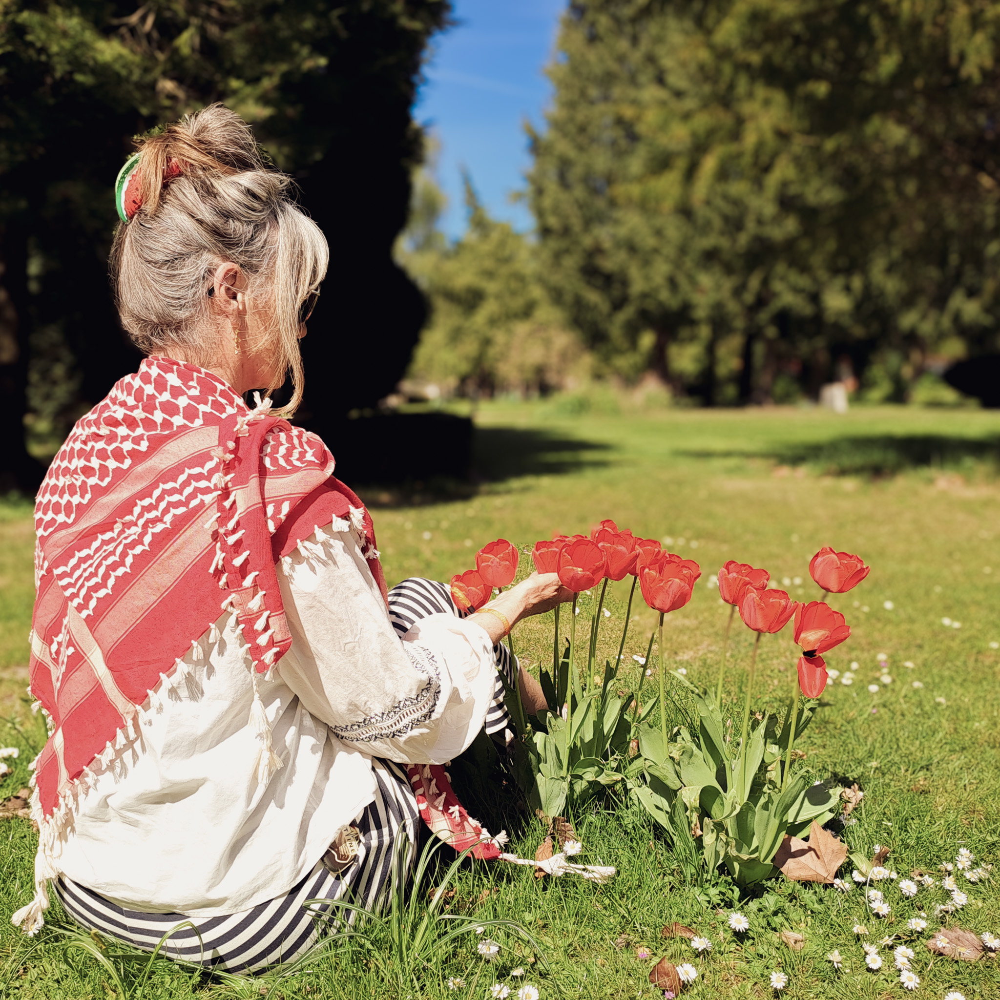

FRI PALÆSTINA
MEDMENNESKER
Over hele verden samles folk for at vise deres støtte til den
palæstinensiske sag;
gennem demonstrationer, retssager,
økonomisk støtte, delinger af palæstinensiske stemmer på sociale
medier, og meget mere.
Her på siden kan du læse mere om hvad
folk over hele verden gør, for at vise deres medmenneskelighed og
sige fra overfor folkedrab, og frarøvelse af basale rettigheder.
LAD KÆRLIGHEDEN SEJRE
